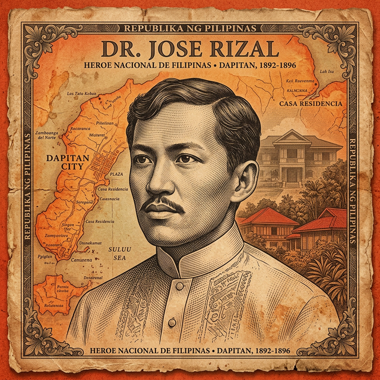
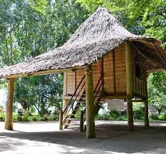
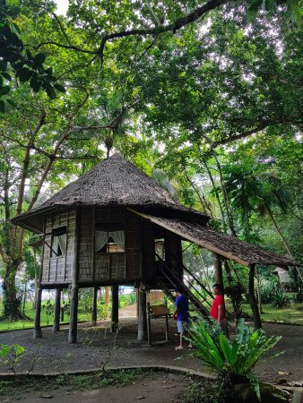
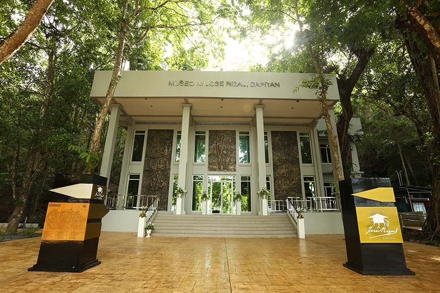

A Hero in Exile
From 1892 to 1896, Dr. Jose Rizal lived in the tranquil shores of Talisay, Dapitan.
Accused of sedition, Rizal turned his banishment into a period of immense productivity. He was not just a prisoner; he was a physician, teacher, farmer, and engineer who transformed the local community.
Winning a lottery prize allowed him to purchase the 16-hectare estate, where he built his home, school, and clinics, creating a self-sustaining sanctuary that remains a testament to his versatile genius.

Treasures of Talisay
Explore the meticulously reconstructed structures that defined Rizal's daily life.

Casa Cuadrada
The main residence where Rizal's family stayed. It also served as a workshop and dormitory for his students.

Casa Redonda
An octagonal clinic and dormitory for his students, where Rizal treated patients from all over the world.

Rizaliana Museum
A modern repository housing original clothing, tools, and manuscripts belonging to the national hero.
Plan Your Visit
Location
Brgy. Talisay, Dapitan City,
Zamboanga del Norte, Philippines
Hours
Tuesday – Sunday
8:00 AM – 4:00 PM
Admission
Free Entry for the Park
Small fee for Museum usage